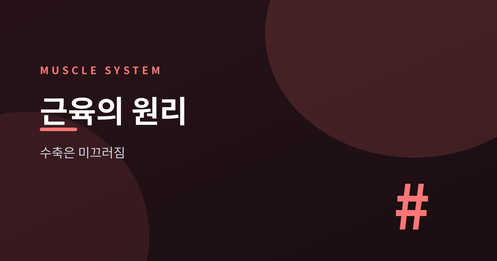
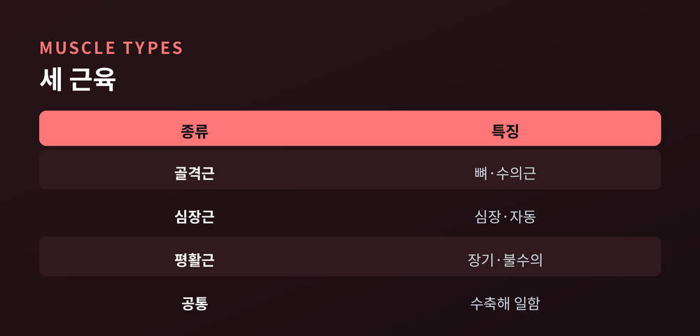
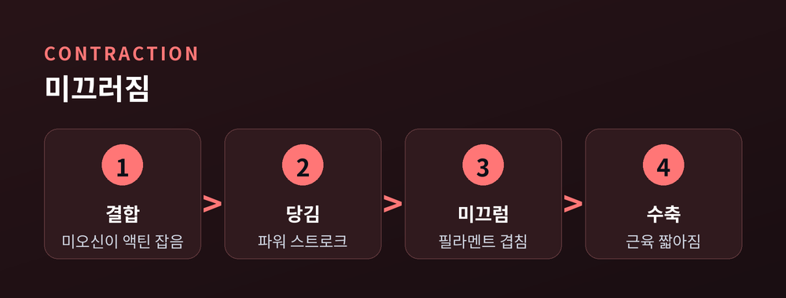
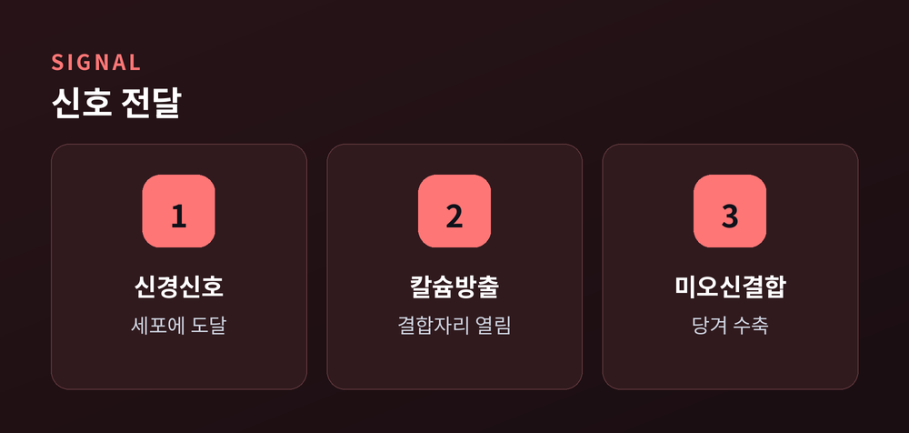
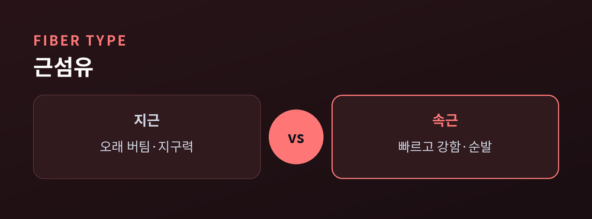

몸을 움직이는 수축의 원리

우리는 걷고, 숨 쉬고, 심장을 뛰게 하는 모든 순간에 근육을 씁니다. 그런데 근육이 실제로 '어떻게' 힘을 내는지는 의외로 덜 알려져 있습니다. 오늘은 근육의 종류부터 수축의 원리까지, 몸속 움직임의 구조를 쉽게 풀어보겠습니다.
인체 근육은 크게 골격근, 심장근, 평활근 세 가지로 나뉩니다. 골격근은 뼈에 붙어 몸을 움직이고 자세를 잡는 근육으로, 우리 뜻대로 움직일 수 있는 '수의근'입니다. 심장근은 오직 심장에만 있으며, 쉬지 않고 스스로 뛰어 혈액을 내보냅니다. 평활근은 위장, 혈관, 방광 같은 내부 장기의 벽을 이룹니다. 삼킨 음식을 밀어 내리는 소화관의 연동운동이 바로 평활근의 일입니다. 심장근과 평활근은 의지와 상관없이 움직이는 '불수의근'인데요. 덕분에 우리가 잠든 사이에도 몸속 장기는 멈추지 않습니다.

근육이 힘을 내는 원리는 '슬라이딩 필라멘트(활주설)'로 설명됩니다. 1954년 두 연구팀이 각각 독립적으로 제안한 이론입니다. 근섬유 안에는 가는 필라멘트인 액틴과 굵은 필라멘트인 미오신이 나란히 겹쳐 있습니다. 수축할 때 미오신의 머리가 액틴을 붙잡아 당기면서, 두 필라멘트가 서로 미끄러져 겹치는 부분이 늘어납니다. 필라멘트 자체는 짧아지지 않지만, 근육 전체는 짧아지며 힘을 냅니다.
"필라멘트는 줄어들지 않습니다. 서로 미끄러져 겹칠 뿐입니다."

수축은 신경 신호에서 시작됩니다. 신호가 근육 세포에 닿으면 세포 안에 저장돼 있던 칼슘이 방출됩니다. 이 칼슘이 액틴의 결합 자리를 덮고 있던 단백질을 밀어내 자리를 엽니다. 그러면 미오신 머리가 그 자리에 붙어 다리를 걸고, ATP 에너지를 써서 액틴을 당깁니다. 이 '파워 스트로크'가 반복되며 근육이 짧아집니다. 신호가 멈추면 칼슘이 다시 회수되고, 결합 자리가 닫히며 근육은 이완합니다. 근육이 움직이려면 에너지원인 ATP가 계속 필요한 셈입니다.

골격근은 근섬유의 성질에 따라 지근(1형)과 속근(2형)으로 나뉩니다. 지근은 산소를 이용한 유산소 대사로 오래 버텨, 마라톤 같은 지구력에 강합니다. 속근은 빠르고 강하게 수축하지만 쉽게 지쳐, 단거리·역도 같은 순간 힘에 유리합니다. 사람은 대체로 두 종류를 비슷한 비율로 갖고 있습니다. 근육은 움직임뿐 아니라 대사에도 중요합니다. 골격근은 식후 혈당을 가장 많이 소비하는 조직이며, 기초대사량의 약 20%를 차지합니다. 근육량이 늘면 인슐린 감수성이 좋아진다는 보고도 있습니다. 근육을 지키는 방법은 크게 두 가지로 모입니다. 저항운동으로 자극을 주고, 충분한 단백질로 재료를 채우는 것입니다. 다만 단백질을 무작정 많이 먹는다고 근육이 더 느는 것은 아니며, 적정량으로 충분하다는 연구도 있습니다.

근육은 세 종류로 나뉘지만, 힘을 내는 원리는 액틴과 미오신이 서로 미끄러진다는 하나의 원리로 모입니다. 작은 필라멘트의 움직임이 모여 걸음이 되고 심장 박동이 됩니다. 이 글은 일반적인 정보로, 의학적 조언이 아닙니다. 오늘 계단을 오를 때, 그 안에서 미끄러지는 수많은 필라멘트를 한 번 떠올려 보시면 어떨까요.
참고 소스